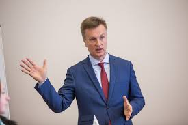

Кандидат у Президенти України Валентин Наливайченко

підтримка : 0.22%
Валенти́н Олекса́ндрович Налива́йченко (нар. 8 червня 1966, Запоріжжя, Українська РСР) —
український політичний, державний та громадський діяч.
Заступник міністра закордонних справ України (2004—2005), Надзвичайний і
Повноважний Посол України в Білорусі (2005—2006), Голова СБУ (в. о. 22 грудня 2006 —
6 березня 2009; 6 березня 2009 — 11 березня 2010; 24 лютого 2014 — 18 червня 2015).
Народний депутат України VII скликання.
Має 1-й ранг державного службовця та дипломатичний
ранг Надзвичайного і Повноважного Посланника першого класу.
Один із учасників Революції гідності (2013—2014),
засновник громадського об'єднання «Антикорупційний рух» (вересень 2015 року),
лідер партії Громадсько-політичний рух Валентина Наливайченка «Справедливість» (з травня 2016 року).